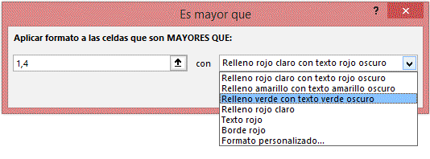
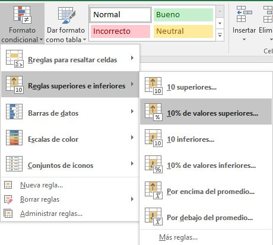
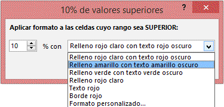
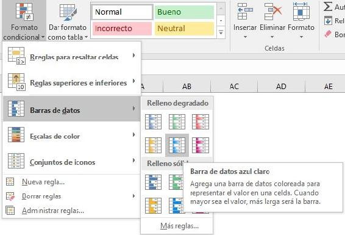
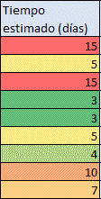
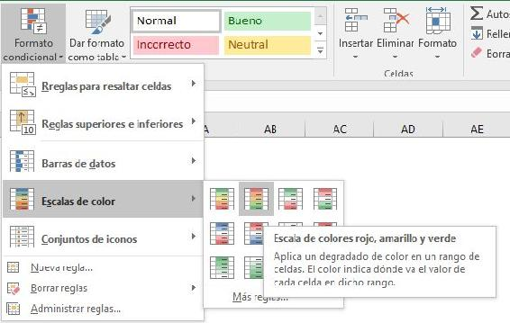
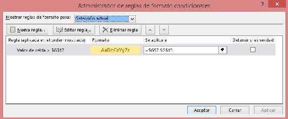
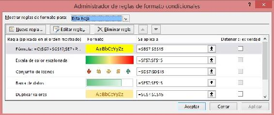
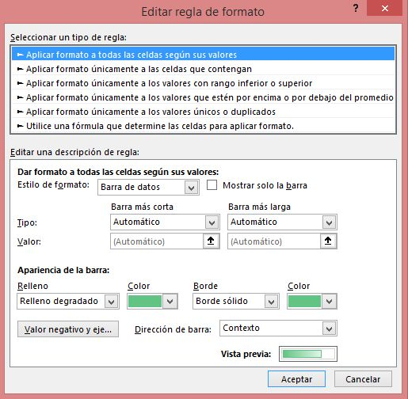

Excel
Formato condicional
En la sección anterior hemos aprendido a usar los formatos de las celdas y
de su contenido. Esto se hace principalmente para resaltar contenidos (como poner color a los títulos),
o para llamar la atención sobre algunos datos (por ejemplo, marcar en rojo los periodos donde
tenemos pérdidas en lugar de beneficios). Sin embargo, una vez que establecemos el formato de
una celda, esta queda siempre de la misma manera (a menos que lo cambiemos de nuevo a mano)
Principalmente, el formato condicional se utiliza para definir un formato para una celda o grupo
de celdas (hasta aquí como lo que ya hemos visto), con la particularidad de que este formato se
aplica sobre las celdas solo si se cumple una condición definida previamente, por ejemplo, poner
un fondo verde si el valor es mayor que 0 y color de letra rojo si el valor es menor que 0.
Por tanto, para aplicar un formato condicional como este a una celda o rango de celdas es
necesario definir estos dos elementos:
- Condición que Excel comprobará si es verdadera o falsa.
- Formato que aplicar a las celdas en el rango si la anterior condición es ser verdadera.
Otro tipo de formatos condicionales son los que no necesitan una condición para aplicarse,
sino que se aplican sobre un grupo de celdas, y el formato de cada una de ellas depende de
su propio valor en relación al valor de todas las demás (no te preocupes si no terminas de
entenderlo aún, lo comprenderás tan pronto como veas un ejemplo).
Excel ofrece la posibilidad de aplicar formatos condicionales a las celdas seleccionadas con la
utilización de formatos condicionales predefinidos, lo cual además de sencillo es muy rápido de
hacer, y para ocasiones que requieran formatos específicos, podemos modificar los predefinidos
o crear nuestros propios formatos desde cero.
Formatos predefinidos para resaltar celdas
Supón que estás trabajando en Excel con una tabla de datos con muchas filas. En esta tabla
hay una columna llamada ingresos, pero como hay tantos datos no es fácil distinguir las
líneas con beneficios y cuáles son las que tienen pérdidas.
Para facilitar la identificación visual de las líneas con beneficios podríamos usar un
formato condicional que ponga un fondo verde a la celda si el valor es mayor que 0.
Esto lo podemos hacer de manera bastante rápida si usamos un formato condicional predefinido
sobre las celdas que tengamos seleccionadas. Para ello nos fijamos en el grupo Estilos de
la ficha Inicio, en concreto en el comando Formato condicional. Al hacer click se
despliega un menú, donde vemos las distintas opciones de formato condicional, y dejamos
el ratón sobre Reglas para resaltar celdas.
En el último menú desplegado nos pide seleccionar que clase de condición vamos a introducir:
Es mayor que

Todas las opciones para resaltar celdas funcionan prácticamente igual;
- Seleccionamos el tipo de condición que vamos a comprobar
- En la nueva venta introducimos el valor que hace que se cumpla
la condición y el formato que tendrá la celda si se cumple la condición.
Las dos condiciones ligeramente diferentes son Fecha (en la que tienes que elegir la fecha de
una lista desplegable) y Duplicados (en la que tienes que elegir del desplegable si marcar
valores duplicados o únicos).
Reglas superiores e inferiores
La otra opción de formato condicional para resaltar las celdas es Reglas superiores e
inferiores

Desde aquí podemos aplicar un formato condicional que nos aplique el formato a los 10 valores más
altos (el título dice 10, pero al entrar se puede modificar el número), al 10% más alto
(también se puede modificar el 10% al porcentaje que queramos), a los inferiores
(en número o en porcentaje) y a los que están por encima o por debajo del promedio de los valores
a los que estemos aplicando el formato.

Barras de datos predefinidas
Este formato se utiliza para ver de un vistazo rápido cuales son los valores mayores
de la selección. Cuando se aplica este formato sobre un conjunto de celdas, todas ellas
se rellenan con barras de un color. La celda con el valor más alto de todos los de la
selección estará completamente ocupada por la barra, las celdas con valor cero (0) no
tienen barra, y los valores intermedios se rellenan en proporción al valor máximo.

Observación:
Este tipo de formato condicional es del tipo que adelantábamos en la introducción del capítulo que
no requieren de una condición inicial para aplicar el formato o no aplicarlo, sino que lo aplica
siempre, y lo hace en relación al valor de las celdas seleccionadas.
Para aplicar este tipo de formato condicional usaremos el comando “Formato condicional”,
“Barras de datos”, y seleccionamos el tipo que queramos.
Todos los tipos de barras de datos son iguales, cambiando únicamente el color de las barras,
y color sólido (toda la barra tiene el mismo color) o degradado (como el de la imagen anterior,
el color se va haciendo más blanquecino a la derecha de la barra).
Escalas de color predefinidas
Su funcionamiento es muy similar al de las barras de datos. No requiere de una condición
inicial para aplicar el formato si se cumple, sino que aplica siempre el formato y lo hace en
función del valor de cada celda en relación al valor de las demás celdas de la selección,
con la diferencia de que este tipo de formato utiliza colores en vez de barras para diferenciar
a los valores más altos de los más bajos.

Para aplicar este tipo de formato condicional usaremos el comando “Formato condicional”,
“Escalas de color”, y seleccionamos el tipo que queramos.

Para determinar qué color aplicar a cada celda debemos seleccionar el color que tendrá la celda con el
valor superior, el que tendrá la celda con el valor inferior, y en algunos casos el color que tendrá
la celda con el valor intermedio. Si elegimos solo 2 colores se llamará escala de 2 colores y si elegimos
3 colores será una escala de 3 colores.
Conjuntos de iconos predefinidas
El último tipo de formatos condicionales predefinidos son los conjuntos de iconos, que funcionan
de forma muy similar a los dos anteriores, se seleccionan las celdas a las que aplicar y en base
a su valor en relación al valor de las demás celdas de la selección se aplica un icono u otro.
Para aplicar este tipo de formato condicional usaremos el comando “Formato condicional”,
“Escalas de color”, y seleccionamos el tipo que queramos.
El mayor de los valores de la selección tendrá el icono más favorable, el más bajo tendrá el más
desfavorable, y los intermedios se reparten según cuantos tipos de iconos haya en el conjunto elegido.
Por ejemplo, en una selección con valor mínimo 0 y máximo 100, si elegimos un conjunto con 3 iconos los
valores de 0 a 33 tendrán el más desfavorable, del 34 al 66 tendrán el intermedio, y del 67 al 100
tendrán el más favorable. Si hubiéramos elegido 5 iconos el reparto sería 0-20, 21-40, 41-60, 61-80
y 81-100.
Detectar los formatos condicionales en una hoja
Una vez que hemos terminado de poner formatos condicionales a nuestra hoja es igual de importante saber
detectar en que celdas hay formatos condicionales, de que tipo y cuales tienen formatos condicionales
en conjunto (importante en las barras, escalas e iconos, ya que el grupo es indispensable para saber
cuál es el máximo).
La detección es el paso intermedio entre la utilización de un formato condicional predefinido y
la modificación de los mismos: no puedes modificar un formato que no sabes localizar.
Para ver los formatos condicionales que hay aplicados a un rango de celdas lo seleccionamos y
vamos al comando “Formato condicional”, a la opción “Administrar reglas” del desplegable.

Se abre la siguiente ventana, en la que vemos los formatos aplicados a las celdas seleccionadas.
En la parte superior de la ventana vemos que pone “Mostrar reglas de formato para:” y está
seleccionado “Selección actual”. Si esto lo cambiamos por “Esta hoja” se mostrarán todos los
formatos condicionales que hay en toda la hoja, y en la columna “Se aplica a” podemos comprobar
a que celdas o rango de celdas aplica el formato.

Editar los formatos condicionales predefinidos
La primera modificación que necesitamos conocer (y la más simple de todas) es modificar el
rango al que aplica un formato condicional. Para ello pinchamos en el cuadro de texto de la
columna “Se aplica a” de la regla que queramos modificar y escribimos el nuevo rango al que
aplicarlo, o pinchamos en el botón de la derecha (↑) y seleccionamos el rango.
Las modificaciones en el propio formato condicional (las condiciones y los formatos aplicados)
se hacen pulsando sobre una condición y pulsando “Editar regla”. Al hacerlo se abre una ventana
con la información sobre el formato.
Aplicar formato a todas las celdas según sus valores

El primer tipo son los formatos condicionales que no necesitan condición inicial:
barras de datos, escalas de color (2 o 3 colores) y conjuntos de iconos. Desde aquí podemos
cambiar los colores con total libertad, cambiar como se escogen los datos más altos y bajos
(por ejemplo, en una barra de datos, que no comience a aparecer la barra a partir del valor 0,
sino a partir del número más bajo, o en una escala de 3 colores que el color intermedio no sea
la media de todos los datos, sino el 80% respecto del máximo), elegir si se muestran los
valores numéricos en la celda o solo la representación gráfica del formato condicional, etc.
Aplicar formato únicamente a las celdas que contengan
Cada celda se evalúa contra una condición especificada, y si se cumple se aplica el formato especificado.
Aquí se podría poner como condición que la celda sea mayor que la celda de su izquierda, por ejemplo.
En este caso, si se quisiera aplicar el formato a un conjunto de celdas (que cada celda se marque si
es mayor que la de su izquierda) hay que tener en cuenta que por defecto al escribir la
condición se bloquea la celda, por lo que el formato se referirá todo el rato a la celda marcada
inicialmente).
Si queremos marcar las celdas mayores que las de su izquierda y no tener que introducir todas las
condiciones una a una tendremos que saber utilizar el símbolo $, que lo veremos más adelante en el
capítulo de las funciones.
Aplicar formato únicamente a los valores con rango inferior o superior
Funciona exactamente igual que los predefinidos de “Reglas superiores e inferiores”,
se elige si marcar los más altos o los más bajos y si vamos a marcar una cantidad
concreta o un porcentaje de la selección.
Aplicar formato únicamente a los valores por encima o por debajo del promedio
Las 4 primeras opciones son igual que los predefinidos, marcar según el valor
sea por encima o por debajo (o igual) del promedio del rango. El resto de
las opciones son para marcar según la relación con la desviación.
Aplicar formato únicamente a los valores únicos o duplicados
Tan solo hay que elegir en el desplegable si queremos que se marquen los valores
que son únicos en el rango o los que están duplicados en el rango.
Utilice una fórmula que determine las celdas para aplicar formato
Esto no es una modificación, sino una creación desde cero, que vamos a ver en la próxima clase
En cualquiera de los último 5 casos, una vez que definimos la condición, no tenemos más que
pinchar en “Formato” y seleccionar todas las características que queremos que tenga nuestro
formato (formato de contenido, color de texto y de celda, bordes…). Al aceptar, en el recuadro
de “Vista previa” podemos ver cómo quedará el formato cuando se aplique.
Desde la misma ventana que hemos abierto para detectar y modificar los formatos podemos crear un
nuevo formato sobre las celdas que tengamos seleccionadas, pulsando “Nueva regla” y eligiendo una
condición y un formato como acabamos de ver que se hace para editar.
Crear formatos condicionales personalizados
Acabamos de ver que el último de los tipos de reglas para aplicar formatos condicionales es
“utilizar una fórmula que determine las celdas para aplicar formato”. Esto quiere decir que podemos
introducir nuestra propia regla en forma de función para marcar las celdas que cumplan la condición.
Por tanto, estos formatos personalizados no incluyen barras, escalas de colores o conjuntos de iconos,
sino que son únicamente para resaltar celdas.
Como aún no hemos empezado a hablar sobre las funciones vamos a pasar rápido por estos formatos,
pero vamos a ver un ejemplo concreto de función simple:
=O($G7>$G$17;$E7>PROMEDIO($E$7:$E$15))
Lo que estamos viendo es una función lógica “O”, por lo que el formato se va a aplicar si se cumple
la primera condición O se cumple la segunda condición, y dichas condiciones son:
- La celda G7 es mayor que la celda G17
- La celda E7 es mayor que el promedio de las celdas E7 hasta la E15
Esto puede ser un poco confuso si aún no sabes sobre funciones, pero una vez que sepas como usar
funciones será muy sencillo entender el funcionamiento de esta fórmula y crear las tuyas propias
para cumplir con tus necesidades de formatos condicionales más allá de las opciones básicas que
ofrece Excel.
Tipos de datos
Excel nos permite trabajar con distintos tipos de datos, como
números, fechas y texto, entre otros. Si bien al ingresarlos en las
celdas, estos son detectados de manera automática, el programa no
siempre interpreta de modo correcto lo que deseamos, y por eso es
necesario saber cómo lograr que cada dato se corresponda con su tipo
específico. En esta sección, centraremos nuestra atención en identificar
tres tipos de datos principales: números, texto y fechas.
Número
El tipo de datos numérico es el que más utilizaremos en nuestras
planillas de cálculo. Al ingresar un número en una celda, el programa
reconocerá el formato numérico y el valor aparecerá alineado a la
derecha. Los principales aspectos que debemos tener en cuenta al
ingresar números son los siguientes:
- Se admite como número a los caracteres del 0 al 9, la coma decimal
(,) y el separador de miles (.). La función de estos últimos elementos
podrán variar según la configuración regional del sistema operativo
de la computadora en la que estemos trabajando.
- Si utilizamos el punto (.) del teclado numérico, este se tomará como
separador decimal, al igual que la coma (,) del teclado alfanumérico.
- El punto (.) que se encuentra en el teclado alfanumérico será
considerado como separador de miles.
- Podemos agregar un signo monetario, como $ o €, al asignar un
formato de celda monetario.
- El uso de los símbolos + (más), - (menos),
* (multiplicar) y / (dividir) junto con los
números será interpretado como un cálculo
válido si ingresamos el signo = (igual) o + (más)
adelante. Por ejemplo: =100*3,5
- Un número seguido del signo % será tomado
como porcentaje. Al ingresarlo, Excel
dividirá el valor por 100, pero mostrará el
número ingresado seguido de del signo %.
Por ejemplo, si escribimos 40%, eso es lo
que veremos en la celda, aunque el valor numérico será 0,40. En
cambio, si escribimos 40 y le aplicamos el singo % desde la cinta
de opciones, lo que veremos es 400%. Para que se muestre 40%,
debemos escribir 0,40 y luego aplicar % desde la cinta
Observaciones:
- Como consideración general, siempre conviene ingresar los números
sin ningún carácter adicional, solo con el signo menos (-) si correspondiese y la
coma decimal (,) si el número tuviera decimales. Por ejem�plo: 100.000,00 debe
escribirse así: 100000. Luego, con los
formatos de celda podremos verlo con más
o menos decimales, formato monetario, contabilidad, etc
- Si los símbolos +, -, * y / no son precedidos
por el signo = se mostrarán en forma literal sin efectuarse la operación
Texto
El tipo de datos texto abarca las cadenas de caracteres
alfanuméricos, es decir, conjuntos de letras, símbolos y números. Se
utiliza, principalmente, para escribir nombres, rotular información y
describir características, entre otras posibilidades.
Cuando ingresamos texto en una celda, Excel reconocerá de manera
automática este tipo de dato y, de manera predeterminada, lo alineará
a la izquierda, al igual que si ingresamos una combinación de números
y letras más símbolos. Esto puede cambiar si el texto comienza con
el signo igual (=) o con el signo más (+) o menos (-). El programa
interpretará que lo que sigue es una fórmula de cálculo; por lo tanto,
si queremos que sea interpretado como texto, debemos anteponer el
carácter comilla simple (‘)
Fecha y hora
Excel utiliza como elementos separadores de fecha la barra (/) y
el guion (-). Al ingresar dos o tres números separados con alguno de
estos caracteres, el programa los interpreta como fechas. Por ejempli,
si ingresamos 3/5, aparecerá 03-may del año en curso. En el caso de que
sea 25-2-13, veremos 25/02/2013
El formato de fecha que se interpreta de modo predeterminado
depende de la configuración regional establecida en el sistema
operativo. La configuración regional por defecto, en la mayoría de los
países de habla hispana, es dd/mm/aaaa (día/mes/año); y en los Estados
Unidos es mm/dd/aaaa (mes/día/año).
Además, una fecha como 15/2/2013 tendrá formato de Fecha corta,
mientras que viernes, 15 de febrero de 2013 tendrá formato de Fecha larga.
Ahora, si queremos ingresar un dato en formato de hora, lo hacemos
escribiendo dos números (hora y minutos) separados por dos puntos
(:). Así se interpretará el formato de hora hh:mm (hora:minuto). En
cambio, si ingresamos tres números separados con dos puntos (:) se
toman como hh:mm:ss (hora:minuto:segundo).
Configuración regional
La configuración regional del sistema operativo determina la manera
en que Excel y los demás programas interpretan los números, las
fechas y la distribución del teclado.
Para modificarla, debemos presionar el botón Iniciar, ingresar en
el Panel de control y acceder a la categoría Reloj, idioma y región. Dentro
de la categoría Configuración regional e idiomas podemos modificar
la configuración en general. Es posible elegir los separadores de
decimales y de miles (, o .), el símbolo de la moneda y el formato
de fecha y hora, entre otras opciones. En los países de habla hispana,
las principales opciones predeterminadas suelen ser: fecha corta:
dd/mm/aaaa, símbolo decimal: , (coma), separador de miles: . (punto).
Número
En una Hoja de cálculo, los distintos TIPOS DE DATOS que podemos introducir son:
-
Valores constantes Un dato que se introduce directamente en una celda. Puede ser un número, una fecha
u hora, o un texto. Si deseas una explicación más detallada sobre los valores constantes visita nuestro básico
sobre los tipos de datos
- Fórmulasuna secuencia formada por: valores constantes, referencias a otras celdas, nombres, funciones,
u operadores. Es una técnica básica para el análisis de datos. Se pueden realizar diversas operaciones con los
datos de las hojas de cálculo como +, -, *, /, Sen, Cos, etc. En una fórmula se pueden mezclar constantes, nombres,
referencias a otras celdas, operadores y funciones. La fórmula se escribe en la barra de fórmulas y debe empezar
siempre por el signo =.
Seleccion
Seleccionar celdas y rangos
A la hora de aplicar formatos, copiar, borrar o mover contenido,
debemos seleccionar el área en la que vamos a trabajar. Una correcta
selección permitirá ahorrar pérdidas de tiempo. Si queremos resaltar en
negrita el contenido de una celda, basta con hacer un clic con el mouse
sobre ella para seleccionarla y, luego, presionar Negrita. Lo mismo
hacemos con cualquier otra celda y con otros tipos de formato. Si bien
es una tarea sencilla, al momento de aplicar estos cambios a múltiples
celdas, necesitamos seleccionar rangos enteros, filas, columnas y hasta
la hoja completa con el fin de aplicar los cambios de una sola vez.
Observación:Seleccionar celdas individuales y rangos permitirá aplicar sobre ellos distintas opciones
de formato. Sin embargo, es importante destacar que es posible seleccionar tanto celdas
vacías como celdas con contenido dentro de un mismo marco de selección. Lo mismo sucederá
con la aplicación de formato, la cual podrá hacerse sobre celdas vacías o rellenas
Atajos de teclado
Los atajos de teclado permiten realizar diversas acciones en base a
la selección de dos o más teclas a la vez. A continuación detallaremos
los atajos de teclado más utilizados en Excel 2013
| Combinación de teclas |
Resultado |
| CTRL + SHIFT |
Barra espaciadora: selecciona toda la hoja. |
| CTRL + SHIFT + flechas izquierda o derecha |
selecciona todo el contenido de una fila desde la celda activa. |
| CTRL + SHIFT + flechas arriba o abajo |
selecciona la totalidad del contenido de la columna desde la celda activa. |
| CTRL + Barra espaciadora |
selecciona la columna correspondiente a la celda que se encuentra activa. |
Ingresar y editar datos
Al comenzar una planilla nueva en Excel, la celda activa es la A1. Si
escribimos un número o un texto, estamos ingresando datos en ella.
Así de sencillo resulta registrar datos. Vamos a familiarizarnos con
esta tarea y a aprender, además, a modificar el contenido presente o a
eliminarlo, según nuestras necesidades
Ingreso
Para asegurarnos de ingresar datos en una celda es indispensable
que esta se encuentre seleccionada como activa. Por lo tanto, con el
puntero del mouse nos posicionamos sobre ella y hacemos un clic para
que quede seleccionada y activa. Un recuadro más grueso diferencia
la celda activa del resto. Podemos trasladarnos desde una celda activa
a otra usando las flechas del teclado. Una vez en la posición deseada,
escribimos el dato que queremos ingresar, teniendo en cuenta las
consideraciones explicadas sobre los distintos tipos de contenido.
Durante el proceso de ingreso, los caracteres que vamos escribiendo
se muestran en la celda activa y también, en la Barra de fórmulas, que
se encuentra en la parte superior de la hoja de cálculo. Al terminar de
ingresar el dato, presionamos la tecla ENTER. También podemos pulsar
TAB, movernos con las flechas del cursor a otra posición, presionar
en la Barra de fórmulas el botón Introducir o hacer clic con el mouse en
otra celda. Cualquiera de estas alternativas hará que el dato quede
almacenado en la celda respectiva. Si aún no hemos validado el dato y
presionamos la tecla ESC, cancelaremos lo que estábamos ingresando,
y la celda quedará tal como estaba antes de nuestra intervención.
Modificar
Para modificar un dato ingresado, podemos sobrescribirlo o editarlo.
La primera opción ocurre cuando comenzamos a escribir en una celda
que ya contiene información. En ese caso, los nuevos datos reemplazarán
por completo el contenido anterior. Por ejemplo, si en la celda A1
tenemos la palabra Inicio, nos situamos otra vez
sobre ella, escribimos Final y presionamos ENTER,
el texto original será reemplazado por el nuevo.
La opción de edición nos permite modificar
una porción del contenido de la celda
seleccionada sin tener que borrar o sobrescribir
el dato anterior. Si hacemos doble clic en la celda
que queremos modificar, habilitamos el modo
Edición y entonces, podemos trasladarnos con las
flechas izquierda y derecha sobre el contenido
de la celda, ya sea un texto, un número o una
fórmula. Al borrar los caracteres con SUPR o BACKSPACE, o insertar
otros nuevos entre dos existentes o al final de la cadena, podemos
rescribir la porción de una fórmula, un texto o un número. Una vez
finalizado el proceso, validamos los cambios con ENTER.
Observación: En modo Edición, las flechas del cursor no nos permiten trasladarnos
hacia otras celdas; solo podremos movernos dentro del contenido de la
celda actual para hacer las modificaciones necesarias.
Otra manera de editar una celda es presionar la tecla F2 sobre
la celda activa. En este caso también podemos presionar ESC para
cancelar la edición y volver al contenido original de la celda sin tener
en cuenta los cambios introducidos. Tengamos presente que cuando
estamos modificando el contenido de una celda que contiene una
fórmula de cualquier tipo, la sintaxis de la fórmula será visible tanto
en la Barra de fórmulas como en la celda, pero no su resultado. Una
vez finalizado el proceso, en la Barra de fórmula seguiremos viendo la
sintaxis y en la celda, el resultado.
Borrar
Borrar el contenido de una o varias celdas es algo sencillo, y hay
diferentes formas de hacerlo. Primero debemos seleccionar la celda o
el rango que queremos borrar y luego, presionamos la tecla SUPR, las
celdas seleccionadas quedarán vacías. Otra posibilidad es pulsar el
botón derecho del mouse sobre las celdas seleccionadas y, en el menú
que se despliega, elegir la opción Borrar contenido. También, desde la
opción Borrar del grupo Modificar, en la ficha Inicio, podemos utilizar
Borrar todo, que elimina el contenido, los comentarios y el formato de
la celda; o seleccionar Borrar contenido, que no borrará los formatos
ni los comentarios de la selección. La opción Borrar formato elimina
solo el formato de la celda, pero no el contenido; en tanto que Borrar
comentarios elimina solo los comentarios.
Completar datos
Qué es el controlador de relleno
Al tener una o varias celdas seleccionadas, observamos en la esquina
inferior derecha de la selección un pequeño cuadrado verde separado
levemente del resto del recuadro, que se denomina controlador de
relleno. Si posicionamos el puntero del mouse sobre esta esquina, este
se transformará en una cruz negra más fina que la original, para indicar
que estamos en posición de estirar la selección.
Arrastrar y generar series
El controlador de relleno permite repetir los datos de una celda o
crear series de datos. Para repetir un dato introducido en una celda
bastará con escribirlo y arrastrar el controlador de relleno en la
dirección deseada. Por ejemplo, si en la celda A1 escribimos la palabra
Muestra, luego nos posicionamos sobre ella, activamos el puntero
estirar y con el botón principal apretado nos trasladamos cuatro celdas
hacia abajo hasta A5, al soltar el botón del mouse, estas celdas tendrán
la palabra Muestra, igual que A1. Sin embargo, si el contenido inicial
fuese Muestra 1, luego de arrastrar con el puntero estirar, veremos en
las celdas siguientes: Muestra 2, Muestra 3 y así sucesivamente, hasta el
final del área que hemos arrastrado. Esto se debe a que Excel identifica
que el dato lleva un número y en base a ello crea una secuencia.
Para crear series de datos bastará ingresar los dos primeros valores de la
serie y arrastrar el controlador de relleno. En este caso, el programa
reconoce la diferencia entre ambos y la aplica para continuar la
serie. Por ejemplo, si en la celda A1 escribimos el número 40 y en la
celda A2 el número 45, seleccionamos ambos valores y arrastramos
el controlador, Excel seguirá completando las celdas con los valores
50, 55, 60, 65. Esto se debe a que reconoce que entre los dos primeros
valores había 5 unidades de diferencia
Cuando el contenido inicial es un dato de tipo fecha, al arrastrar
con el puntero estirar, en las celdas siguientes veremos cada fecha
incrementada en un día. En caso de que en la columna inmediata,
izquierda o derecha, de la celda que tenemos activa hubiera celdas
consecutivas con contenido, al hacer doble clic sobre el puntero
arrastrar de la celda activa, se completará la serie hasta la celda final
de la última fila que contiene datos adyacentes.
Opciones de autorrelleno
Al terminar de arrastrar una serie, abajo y a la derecha del área
resultante aparece un botón, se trata del menú Opciones de autorrelleno.
Cuando presionamos sobre él, se despliegan otras alternativas
destinadas a cambiar el modo en que se completaron los datos:
- Copiar celdas: copia las celdas sin completar una serie.
- Serie de relleno: completa de manera automática la serie según el
criterio utilizado para el cálculo.
- Rellena formatos solo: copia únicamente el formato de las celdas de
origen en las celdas de destino.
- Rellenar sin formatos: completa una serie respetando el formato de las
celdas, es decir, sin modificar su aspecto.
Observación:El menú de autorrelleno permite modificar el modo
en que se comporta el puntero estirar luego de arrastrar una celda o rango
Barra de fórmulas
Cuando trabajamos con hojas de cálculo, introduciremos en ellas
datos de diferentes tipos, como números, fechas y textos; y para
procesarlos, utilizaremos fórmulas y funciones o la combinación de
ambas. Para ingresar los datos en Excel podemos escribir directamente
en las celdas o también es posible utilizar la Barra de fórmulas. En esta
sección analizaremos sus opciones.
Cuadro de nombres
Cuando comenzamos a trabajar con Excel y creamos las primeras
fórmulas, nos referimos a las celdas por la intersección de la columna y
la fila, por ejemplo: A1, aunque también podemos darles un nombre. El
Cuadro de nombres permite acceder rápidamente a una celda o asignarle
un nombre a una celda o rango; esto facilita su uso en las fórmulas o
funciones que emplearemos en los diferentes cálculos.
Para asignarle un nombre a una celda o rango, seleccionamos las
celdas, ingresamos la denominación dentro del Cuadro de nombres y
luego, presionamos la tecla ENTER.
Si asignamos nombres a diferentes celdas o rangos de celdas,
y queremos ver la lista de nombres creados en el libro, debemos
presionar la flecha que se encuentra a la derecha del cuadro. Se
desplegará una lista con todos los nombres asignados en el libro,
incluidos los de las tablas que hayamos creado.
Distribuir el espacio
Sobre la derecha del Cuadro de nombres se muestra un pequeño
icono formado por tres puntos situados de manera vertical. Al acercar
el puntero del mouse, notaremos que este cambia de forma, para
convertirse en una flecha horizontal de doble punta. En ese momento,
podemos hacer clic con el botón principal del mouse y sin soltarlo
arrastrar hacia la derecha o la izquierda. De este modo cambiaremos
el tamaño del área correspondiente al Cuadro de nombres o al área de
introducción, para hacerlas más grandes o más pequeñas.
Iconos de la Barra de fórmulas
A la derecha del Cuadro de nombre se encuentran tres iconos, cuya
función explicaremos a continuación. Al pulsar el icono Insertar función (fx)
llamamos al Asistente de funciones, que nos permite insertar una función en
la celda activa. Este asistente nos guía en la selección de los argumentos
que debe llevar la función y brinda una breve descripción de cada uno.
Es frecuente que los usuarios avanzados no usen este asistente en todos
los casos, porque con el tiempo se aprenden la sintaxis de muchas de las
funciones. Los iconos Introducir (√) y Cancelar (x) se activan en el modo de
edición –cuando estamos ingresando datos o modificando el contenido de
una celda–, y permiten cancelar o aceptar el ingreso o la modificación.
Espacio para datos
El área de escritura/edición es el lugar donde
vamos a ingresar los datos, fórmulas y funciones,
o desde donde, posteriormente, editaremos el
contenido de una celda. En ocasiones, al crear
fórmulas extensas, el espacio disponible para la
edición/visualización no es lo suficientemente
grande como para mostrar todo el contenido que
hemos introducido. En estos casos, es posible
aumentar el espacio haciendo clic sobre el icono
de expansión del área de escritura situado sobre el extremo derecho de
la barra. Al hacer clic sobre este icono, el área de escritura se ampliará
Observación
Microsoft Excel permite escribir en más de una línea dentro de una misma celda. Para lograr ingresar da�tos en una nueva línea dentro de una celda, debemos presionar la combinación de teclas ALT + ENTER
y se creará un salto de línea. Tengamos en cuenta que el programa ajusta de manera automática el alto
de la fila, de acuerdo con la cantidad de líneas de contenido
Operaciones básicas
Excel posee una gran cantidad de herramientas que permiten el
uso profesional y también hogareño. Una de ellas son las fórmulas y
las funciones, que nos ayudan a resolver problemas tanto sencillos
como complejos. Con ellas podremos realizar distintas operaciones:
matemáticas, lógicas y financieras, entre otras. Las fórmulas son
operaciones matemáticas o llamadas a funciones en las que se analizan
variables y se obtiene un resultado.
Ingresar fórmulas
Siempre que vamos a escribir una fórmula, tenemos que utilizar el
operador o signo igual (=). De esta manera, el programa interpretará
que lo siguiente que escribiremos es una fórmula o una función.
Antes de describir la ficha Fórmulas de la cinta de opciones, veremos
algunas de las operaciones básicas que podemos efectuar sin tener
que recurrir a este menú.
Para realizar operaciones, es posible utilizar los datos de dos
maneras con características específicas:
- Literales: escribimos los números directamente dentro de la
fórmula, por ejemplo: =15+14.
- Referencia a valores: utilizamos los nombres de las celdas, por
ejemplo: =A4 + A5, donde A4 y A5 contienen valores numéricos.
Las operaciones en Excel se realizan en un orden, siempre de
izquierda a derecha y respetando la jerarquía de los operadores
aritméticos: división, multiplicación, suma y resta. Debemos tener
esto en cuenta a la hora de efectuar las operaciones básicas,
para no cometer errores. Sin embargo, la mejor manera de evitar
equivocaciones es recurrir a los paréntesis, ya que Excel primero
resolverá las operaciones que estén dentro de ellos.
Una vez que aprendamos a utilizar las fórmulas, ya no
necesitaremos una calculadora para hacer las operaciones básicas
dentro de una hoja de cálculo, sino que podremos sumar, restar,
multiplicar y dividir por medio de la siguiente estructura:
=(operando1)(operador aritmético)(operando2) ENTER
Por ejemplo: =15 * 14 ENTER. Hasta que no presionamos la tecla
ENTER, no se realiza la operación
Observaciones:
- En ocasiones, podemos equivocarnos al ingresar manualmente el nombre de una función. En estos casos,
al intentar aceptar la función para ver el resultado veremos que Excel nos muestra el error #¿Nombre?. De
esta manera, podemos situarnos en la barra de fórmulas o presionar la tecla F2 para editarlo
- Al situarnos en una celda,
la Barra de fórmulas mostrará el cálculo realizado.
Editar fórmulas
Si lo necesitamos, podemos editar los datos que se encuentran
dentro de la fórmula tanto desde la Barra de fórmulas como desde la
celda que contiene la operación.
Para saber si una celda tiene una fórmula o si, simplemente,
queremos ver la fórmula en la celda, presionamos la tecla F2. Excel mostrará
la fórmula en la celda, y en el caso de que hayamos usado
referencias a valores, señalará con un color cada una de las celdas que
están involucradas en la operación. Esta tecla tiene el mismo efecto que
hacer doble clic sobre la celda
Ficha Fórmulas
Ahora sí conoceremos la ficha Fórmulas, que nos permite crear o
modificar diferentes funciones. El primer grupo, Biblioteca de funciones,
contiene toda la variedad de fórmulas que existen en Excel. A
continuación, las veremos en detalle
| Tipo de funciones |
Detalles |
| Autosuma |
Contiene funciones sencillas y de uso frecuente, para
realizar una suma, calcular un promedio, obtener un valor máximo o
mínimo y contar elementos. |
| Recientes |
agrupa las últimas funciones utilizadas. |
| Financieras |
Posee las funciones para realizar cálculos financieros,
como la obtención de intereses y tasas, calcular pagos y
amortizaciones de préstamos. |
| Lógicas |
Estas funciones permiten realizar operaciones de lógica,
como analizar si un valor cumple o no una determinada condición, en consecuencia, efectuar una acción; o averiguar si algo es
verdadero o falso. |
| Texto |
Reúne las funciones para trabajar con textos, como extraer
datos, pasar caracteres a mayúscula o minúscula, o unir el
contenido de dos celdas para armar una frase. |
| Fecha y hora |
Incluye las funciones para realizar operaciones con fechas
y horas, como obtener los días laborales de un año o la fecha actual.
Búsqueda y referencia: con estas funciones podemos buscar datos en
una tabla a partir de condiciones especificadas y utilizarlos para
realizar cálculos o referencias de celda. |
| Matemáticas y trigonométricas |
Algunas de las funciones que podemos
encontrar en este grupo son SUMA (con diferentes variantes),
REDONDEO, COSENO, TANGENTE y PRODUCTO |
| Más funciones |
Contiene cinco subgrupos de funciones avanzadas.
- Estadísticas: para efectuar cálculos estadísticos, como, por ejemplo,
frecuencias, desvíos, media, moda.
- Ingeniería: para realizar diferentes operaciones con números
complejos, binarios, imaginarios.
- Cubo: para trabajar con cubos de datos.
- Información: para obtener información sobre el formato de una
celda o el tipo de datos que contiene.
- Compatibilidad: agrupa las funciones que facilitan la compatibilidad
con versiones anteriores de Excel.
- Web: posee funciones para trabajar con una conexión a Internet
(obtener datos de un servicio web, codificación de cadenas URL, etc.
|
Si presionamos Insertar función, se abre un cuadro del diálogo con la
lista de todas las funciones; allí podemos buscar y seleccionar la que
necesitamos. Por ejemplo, elegimos Suma y presionamos Aceptar. Luego,
se abrirá otro cuadro de diálogo para elegir las celdas que vamos a
sumar, por ejemplo, A4 y A5. Luego de aceptar, obtenemos el resultado.
Tipo de errores
Si cometemos un error al ingresar una fórmula, Excel nos devuelve
un texto que informa su tipo
| Tipo de errores |
Detalles |
| #¡N/A! |
indica que no es posible encontrar una coincidencia exacta
con el valor que se está buscando. |
| #¡REF! |
referencia a una celda inválida o inexistente. |
| #¡NÚMERO! |
expresa la existencia de un valor no numérico en una
fórmula de parámetros numéricos. |
| #¡NOMBRE¡ |
nombre de la función incorrecto. |
| #¡DIV/0! |
cuando intentamos dividir por cero. |
Funciones básicas